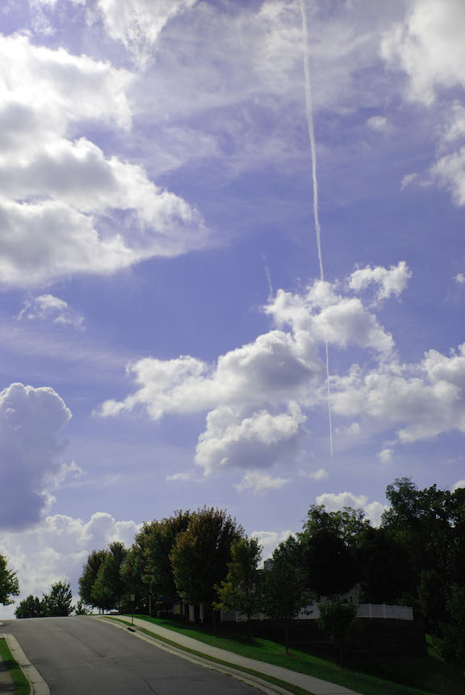
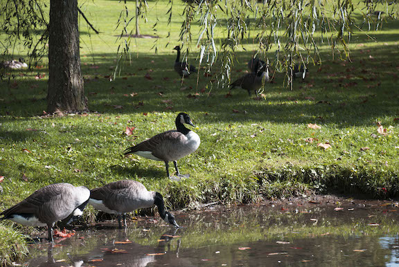
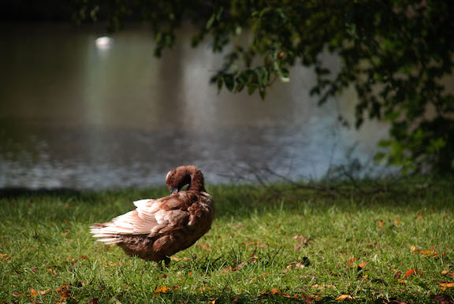
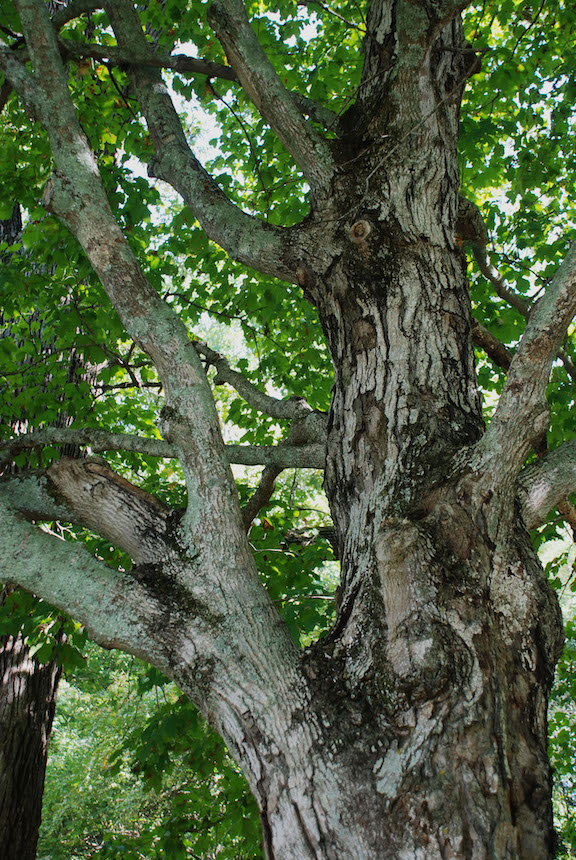

Big Old Burrus
This picture captures the iconic building at Virginia Tech, Burruss Hall. This building has a very central location on campus and holds the office of the president of the university, the office of the VP of admissions and a concert hall with over 3000 seats. The photo is staged to show the massive height and stature of Burrus, representing its importance to our campus.
Fire in the Sky
One day I came back to my apartment after a long day on campus and when I reached the top of the stairs, it looked as though the sky had caught on fire. The blue and red tones lit up the sky for the final few moments of daylight. I snapped a picture before the sun set, the colors went away and the fire went out leaving darkness to take over the night.

Road to the Sky
As I ran through the residential neighborhoods of Blacksburg I sighed at the bottom of the hill the road looked like it went straight up into the sky. One step in front of the other I ran up the hill pretending at the top I would be among the clouds.
Island in the Pond
TThe pond featured above is known by Virginia Tech students as the Duck Pond. It has also been voted Blacksburg's number one cheapest and most romantic date. I think the Duck Pond date is too mainstream so I challenge anyone who sees this post to attempt to take their significant other on a date to the island in the middle of the Duck Pond.

Team Meeting
You know when you see sorority girls giggling in the library about their favorite new frat boy? This is the duck equivalent.

The Lonely Duckling
This poor duck stood alone on the side of the Duck Pond. Has he lost all of his friends? Maybe he is taking a minute out of the day for himself? Maybe he just had an itch on his shoulder he wanted to take care of in private? I feel bad for the lonely duckling, I hope he finds his friends!
Pop of Pink
This flower reminds me of a lot of people. It reminds me of the people who aren’t afraid to stand out, be bold and have fun even when their surroundings may not encourage it.
Protectors of the Pylons
These fantastic statues represent the values Virginia Tech students strive to live by each and every day. They watch over our campus 24/7 from the pylons reminding students to be the best versions of themselves.
Rainy Tuesday
My friend and I went for a walk one Tuesday. It was a cool fall day in Blacksburg, the sky its usual grey color. All of a sudden the grey sky opened up and beads of rain came pelting down on us. We ran to the car giggling and screaming the whole way, when we arrived we jumped in soaked from head to toe. As we sat in the car still laughing, the rain continued to drip around us, peacefully pelting to the ground.
Hanging Buckets of Sunshine
To combat the usual grey sky that on occasion can consume Blacksburg, the city decided to protest and hang these buckets of sunshine around campus and downtown. I appreciate the city doing everything they can to continue to make Blacksburg and Virginia Tech the best places on the planet! *WARNING: this is not fact*

Old Man Tree
This tree reminds me of an old man. It seems wise, for each branch he grew he gained information and knowledge. I also think it reminded me of an old man because it is covered in wrinkles.
{kind=link}
{kind=link}
{kind=link}
{kind=link}
{kind=link}
{kind=link}
{kind=link}
{kind=link}
{kind=link}
{kind=link}
{kind=link}